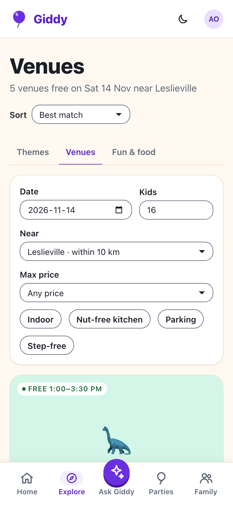
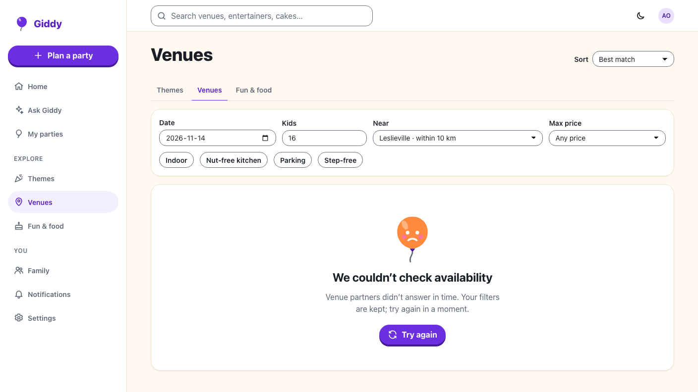
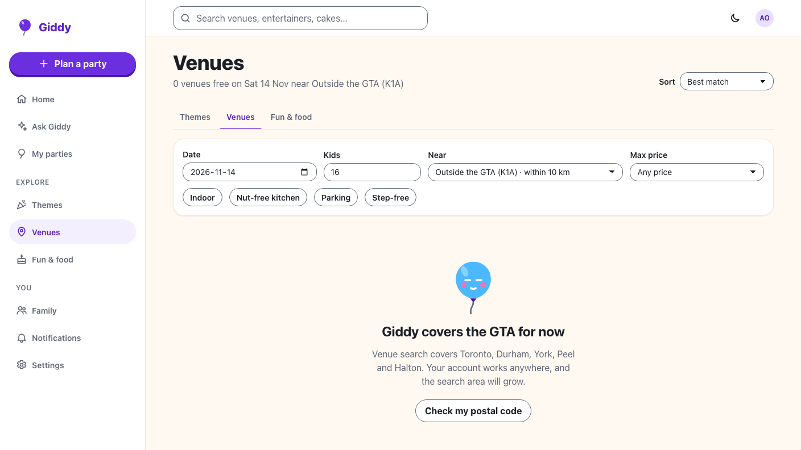
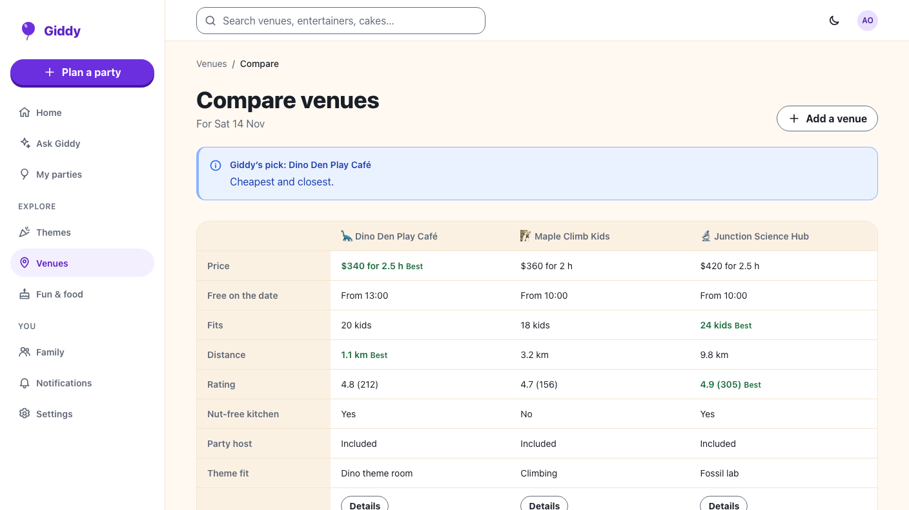

Giddy · Video 04
Find and compare venues
Free, near, big enough, and side by side
Free, near, big enough, and side by side

Filters pre-filled from Zuri's party; the count follows every filter; sort is kept for the session.
"No venues under $250 with a nut-free kitchen" → Raise to $340 shows 1 venue.


Favourite toggle with aria-pressed; booked slots disabled and named; fully booked dates offer the nearest free date, a similar venue and a waitlist.

Free slots, close fits, distance, every filter and sort, relaxation, a 503 on timeout, outside the GTA, alternatives, favourites, waitlist, comparison.
The same flows against the fake API at 360 and 1280px, with axe on every page. Recordings use the same fake.
Next: book a venue